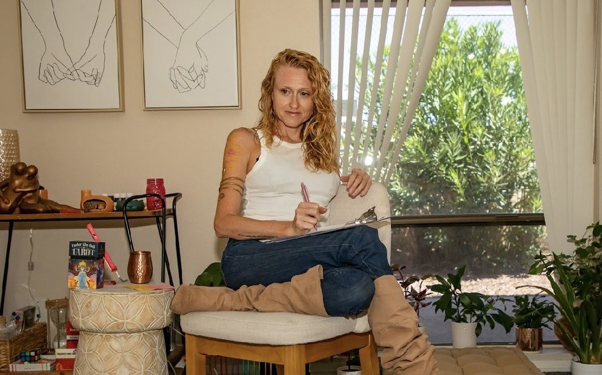
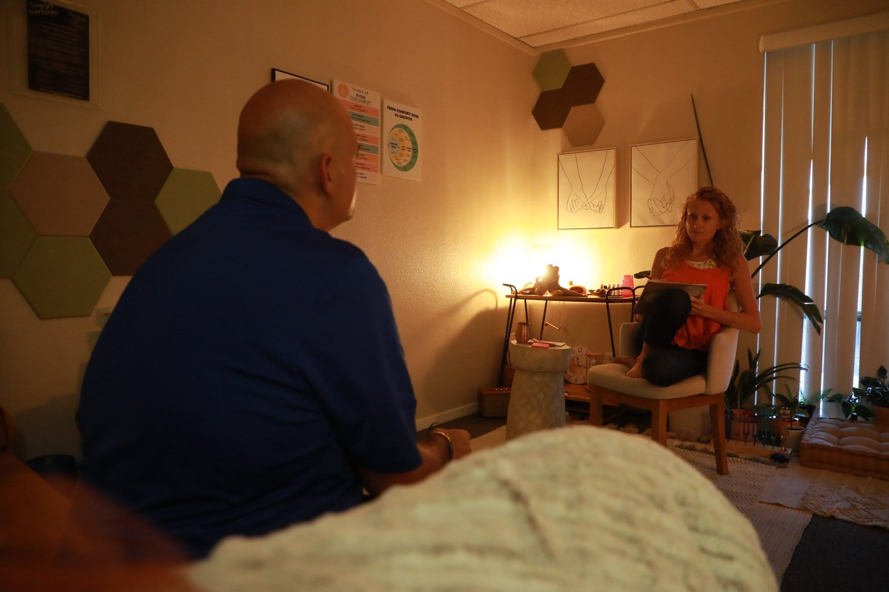
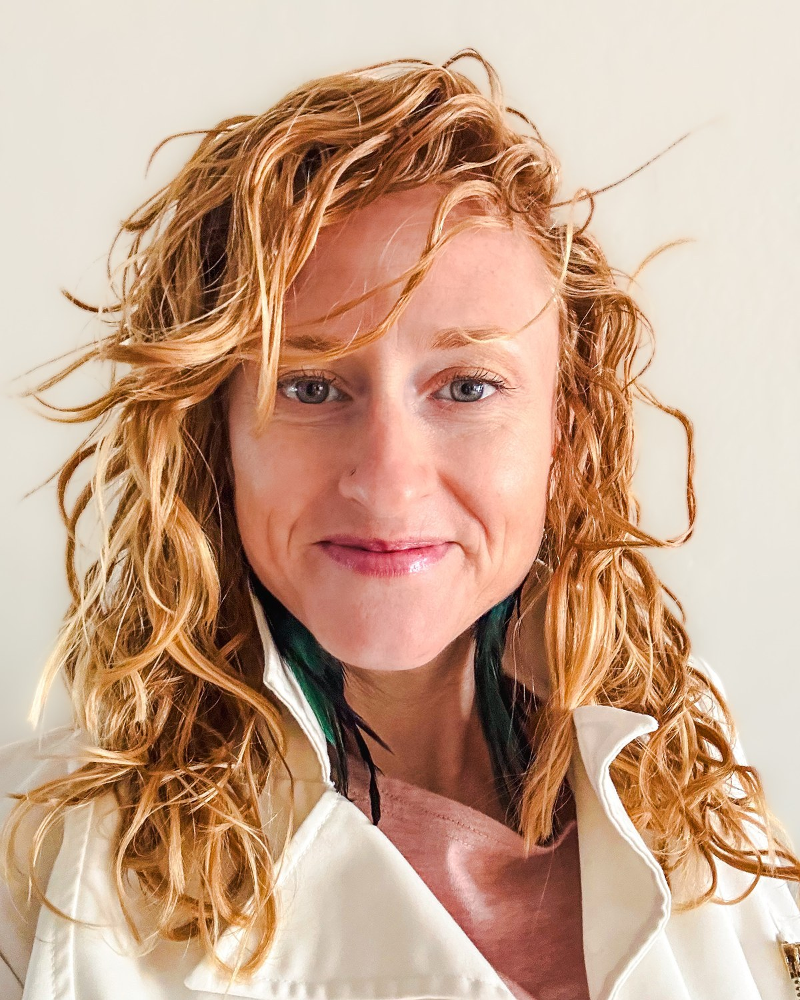
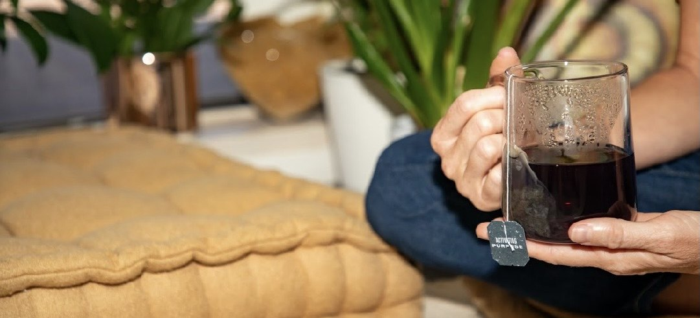
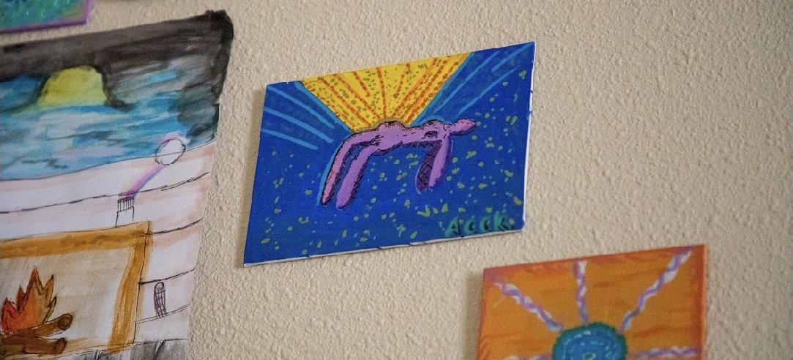

Somatic therapy
For what talking has explained but hasn't settled. The work happens through your own attention, guided by conversation.
Holistic Therapist · Tempe, AZ
Somatic, parts-work, and EMDR-informed therapy for adults, couples, and families, with Alicia Wright, LCSW, and her supervised intern Kyla Gordon. By secure telehealth anywhere in Arizona, or in person at the Mesa office, about 20 to 25 minutes from most of Tempe.
For Tempe
The Wild Within is a holistic therapy practice in Mesa, about 20 minutes from Tempe, with two therapists: Alicia Wright, LCSW, and Kyla Gordon, a supervised therapist intern. Sessions are $85 to $185, in person or by telehealth anywhere in Arizona, and it starts with a free 30-minute phone call. That call is where we figure out which of them fits.
Alicia Wright, LCSW, founded the practice. When something comes up as you talk, a tight throat or a held breath, she slows down and gets curious about it with you. That's somatic therapy, and it runs through her sessions. She's also a certified tantra practitioner and kundalini dance teacher, and she brings that into the room too.
Kyla Gordon is a therapist intern finishing her Master of Social Work, seeing clients under Alicia's clinical supervision for $85 a session. Her approach is trauma-informed and solution-focused, and she works with new parenthood, life transitions, identity, and teens.
How They Work

The office is at 2160 E Brown Rd, Suite 3 in Mesa, about a quarter mile east of Gilbert Road. From ASU, Downtown Tempe, or Tempe Town Lake, take the Loop 202 east to the Gilbert Road exit and head south to Brown. Plan on 17 to 26 minutes on a weekday afternoon, depending on where you start.
From south Tempe, around Kiwanis Park or down by Rural and Elliot, the US 60 east to Gilbert Road and then north takes about the same time. No car? The light rail runs from campus and Downtown Tempe to its last stop at Gilbert Road and Main Street, about two miles south of the office.
Plenty of people never make the drive at all. Secure telehealth works anywhere in Arizona, so a session can happen from your apartment, a private office, or anywhere you can close a door. Same therapist, same work. Therapy is licensed in Arizona only, and coaching is available nationwide.
Closer to the south or east side of the valley? See holistic therapy for Chandler or holistic therapy for Gilbert.

Kyla Gordon sees clients for $85 a session under Alicia's clinical supervision, and she did her own psychology degree at ASU. She works with identity, life transitions, and the stress of a big change. Sessions are by video from your apartment, or in person in Mesa, about 26 minutes from the Memorial Union by the Loop 202. Therapy happens while you're in Arizona, so if you head home for the summer, bring it up on the free call and we'll plan around it.
If you're not sure where you fit, the first conversation is free and that's what it's for.
Each has its own page, or you can see every service.
For what talking has explained but hasn't settled. The work happens through your own attention, guided by conversation.
The 3 a.m. thinking and the chest that won't unclench, worked with through the nervous system as well as the thoughts.
One-on-one work for what happened, and for the habits you built to get through it.
Trust, distance, and the argument that keeps coming back. Joint sessions for Tempe couples, in the Mesa office or online, with some individual work when it helps.
Psychotherapy with the medicine, with preparation before and integration after, led by a certified KAP provider.
Anxiety, identity, friendships, and growing up online. Alicia and Kyla both see younger clients.
Alicia leads the practice and supervises Kyla's clinical work. The rate depends on which of them you see.

Founder & Lead Therapist
Licensed clinical social worker, EMDR trained, certified ketamine-assisted psychotherapy provider, certified tantra practitioner, and kundalini dance teacher. She holds a Master of Social Work plus an MA in Human Services focused on crisis response and trauma. Her deepest work lives in trauma, embodiment, couples, and KAP.
Therapist Intern · MSW Candidate
Arizona native, psychology degree from ASU, finishing her Master of Social Work at Capella. Several years with children and adults in substance use and crisis response settings. She works with perinatal mental health, parenthood, identity through life transitions, and teens, at a lower rate and under Alicia's clinical supervision.
Sessions range from $85 to $185 depending on therapist experience and training. See full pricing →
Before insurance pays for a session, it needs a mental health diagnosis on your record, and then it decides how many sessions that diagnosis gets. A lot of what people bring here doesn't fit that shape. A job that's grinding you down, a marriage that's gone quiet, grief, or wanting to understand yourself at a deeper level than symptoms.
Being out-of-network keeps those decisions in the room. You aren't given a diagnosis for billing purposes, and nobody outside the session sets the pace. We provide superbills you can submit to a PPO for possible reimbursement, and HSA and FSA cards are accepted.
Sessions run $85 to $185. Sessions with Kyla are $85, with Alicia supervising her clinical work, and sessions with Alicia run up to $185.
No intake forms and no commitment. Tell us what's going on, hear how we work, and decide from there.
Schedule Free ConsultationYou can stop at any step.
A phone call. You share what's bringing you in, we explain how we work, and you get a feel for whether it fits. If it doesn't, we'll help you find someone who does.
Telehealth from wherever you are in Arizona, or the Mesa office on E Brown Rd. Switching between the two from week to week is fine.
Weekly, every other week, or longer intensive sessions. Grounding and regulation come first, and the deeper work follows at the pace you set.
Investment
The rate depends on which therapist you see. Out-of-network with superbills for possible PPO reimbursement. HSA and FSA accepted.
Where
Secure video anywhere in Arizona, or 2160 E Brown Rd, Suite 3 in Mesa, off the Loop 202 at Gilbert Road.
Length
Weekly, every other week, or intensive sessions. Wear something comfortable.
She taught me coping skills, gave me guided steps to consider making in my life, and hope for the future. I can now regulate my emotions versus numbing my feelings, and I have joy again, and a life that I embrace in the present moment while dreaming of an even better future.
No. The office is in Mesa at 2160 E Brown Rd, Suite 3, about 20 to 25 minutes from most of Tempe by the Loop 202 or the US 60. Secure telehealth is available anywhere in Arizona.
They are two different offerings here, and both are real parts of the practice. Therapy is licensed clinical work with Alicia, LCSW, using somatic work, parts work, EMDR, and talk therapy. Chakra healing is offered as its own session, and it is wellness work, not therapy.
Kyla Gordon sees clients for $85 a session under Alicia Wright's clinical supervision. She is a therapist intern finishing her Master of Social Work, with a psychology degree from ASU. Sessions are by secure video anywhere in Arizona or in person at the Mesa office, about 26 minutes from campus, and the first step is a free 30-minute phone consult.
Yes. Alicia and Kyla both see clients by secure video anywhere in Arizona, so you can have sessions from home in Tempe and never make the drive. You can also switch between telehealth and the Mesa office from week to week.
Yes. Alicia is the couples therapist on staff. Sessions are in person at the Mesa office or by secure telehealth anywhere in Arizona, and many couples add a few individual sessions along the way.
Yes, while you are in Arizona. Therapy is licensed in Arizona only, so telehealth sessions happen while you are physically in the state. If you travel for work, or you are an ASU student heading home for the summer, bring it up in the consultation and we will plan around it.
Yes. Tracking sensation, breath, and regulation all work over secure video, and being in your own space can make it easier to settle. Telehealth is available anywhere in Arizona.
We are out-of-network, so we do not bill insurance directly. We provide superbills you can submit to a PPO for possible out-of-network reimbursement, and HSA and FSA cards are accepted. Sessions range from $85 to $185 depending on which therapist you see.
Yes. Both Alicia and Kyla work with pre-teens and teens. Kyla sees clients at a lower rate under Alicia's clinical supervision, which makes this an accessible place to start.
Yes. Start with a free 30-minute consult by phone to see whether it is a fit before you book anything.

Circles and workshops for doing this work alongside other people.
See workshops and groups
The first conversation is free. No commitment and no script. It's a chance to see if we're the right fit.